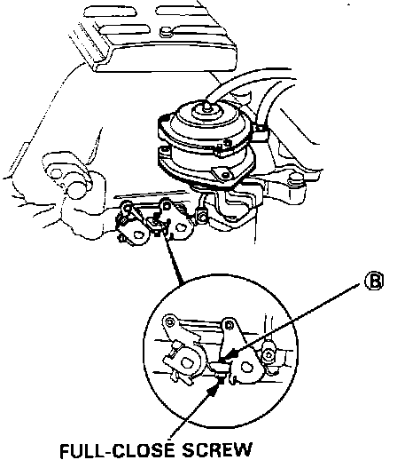

Operation CHARM
: Car repair manuals for everyone.
Home
>>
Acura
>>
1989
>>
Legend Sedan V6-2675cc 2.7L SOHC FI
>>
Repair and Diagnosis
>>
Powertrain Management
>>
Fuel Delivery and Air Induction
>>
Variable Induction System
>>
Adjustments
Variable Induction System: Adjustments
Full-close Screw:

The bypass assembly has no adjustable controls. Do NOT adjust the bypass full close screw (B). This is a factory adjustment.